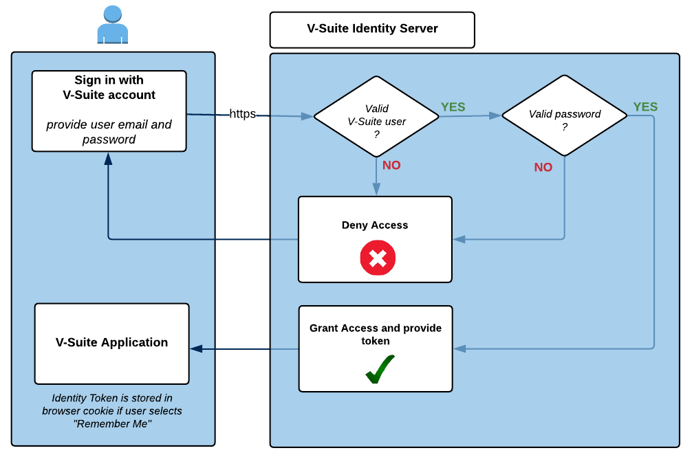

認証
V-Suite、ユーザー資格情報を認証する 2 つの方法が提供されます。
- Azure Active Directory や Active Directory Federation Services (ADFS) などのシングル サインオン (SSO) プロバイダーによる認証
- V-Suiteのユーザー名とパスワードを使用した認証
サインイン サービスは、 V-Suite Identity Server を通じて提供されます。
シングル サインオン (SSO) プロバイダーによる認証
次の図は、 [企業アカウントでサインイン]ボタンを使用してサインインする場合のサインインと認証のプロセスを示しています。

- ユーザーは、 [企業アカウントでサインイン]ボタンを使用して SSO 認証要求を開始します。
- ユーザーがすでにシングル サインオン (SSO) プロバイダーで認証されている場合 (同じ SSO プロバイダーで別のアプリケーションを使用していることが考えられます)、システムはこれを認識し、ユーザーは追加の認証を必要とせずにシームレスにアプリケーションにリダイレクトされます。ログインプロンプト。
- ユーザーがまだ認証されていない場合は、HTTP over SSL (HTTPS) 経由でユーザー名とパスワードを SSO プロバイダーに安全に提供します。
- 次に、SSO プロバイダーはユーザー名を検証し、構成された外部ユーザー ディレクトリ (Azure AD や ADFS など) に対してユーザーを認証します。
- ユーザーが認証されると、システムは認証されたユーザーがV-Suite Webに登録されているかどうかを確認します。
- ユーザーがV-Suite Webに登録されている場合、 V-Suiteアプリケーションへのアクセスが許可され、ID トークンが発行されます。
- ただし、 V-Suite Webにユーザーが登録されていない場合は、エラーメッセージが表示されます。このメッセージは、 V-Suite Web管理者に連絡してアクセスを要求するか、アクセス権のある別のユーザーとして SSO 経由でサインインするかをユーザーに指示します。
- ユーザーがサインイン時に [記憶する] 機能を選択した場合、ID トークンはブラウザーの Cookie に保存されます。次回ユーザーがブラウザを起動すると、この Cookie 情報がアイデンティティ サーバーに自動的に提供されます。トークンがまだ有効な場合は、ユーザーが SSO プロバイダーで再度認証する必要なくアクセスが許可されます。ユーザー名もパスワードも Cookie には保存されないことに注意してください。
使用条件：
- システムには、シングル サインオン (SSO) 認証プロバイダーが構成されている必要があります。
- SSO 認証は、ローカルエリアネットワーク (LAN) とインターネット アクセスの両方のシナリオでアクセスできます。
- システム管理者は、「Remember Me」オプションを無効ことができます。
V-Suiteのユーザー名とパスワードを使用した認証
次の図は、 V-Suite のユーザー名とパスワードを使用してサインインする場合のサインインと認証のプロセスを示しています。

- ユーザーは、HTTP over SSL (HTTPS) 経由でV-Suiteユーザーの電子メールとパスワードを Identity Server に安全に提供します。
- Identity Server は、指定された電子メールが有効なV-Suiteユーザーに属しているかどうかを検証し、ユーザー アカウントの内部ディレクトリに対してユーザーを認証します。
- 認証されると、ユーザーはV-Suiteアプリケーションへのアクセスが許可され、ID トークンを取得します。
- ユーザーがサインイン時に [記憶する] オプションを選択した場合、ID トークンはブラウザーの Cookie に保存されます。次回ユーザーがブラウザを起動すると、Cookie 情報がアイデンティティ サーバーに提供され、トークンが有効であれば、ユーザー名とパスワードを入力しなくてもアクセスが許可されます。 ID サーバーは、ユーザーの電子メールやパスワードを Cookie に保存しません。
使用条件：
- V-Suite のユーザー名とパスワードを使用した認証は、ローカルエリアネットワーク (LAN) とインターネット アクセスの両方のシナリオで使用できます。
- システム管理者は、「Remember Me」オプションを無効ことができます。